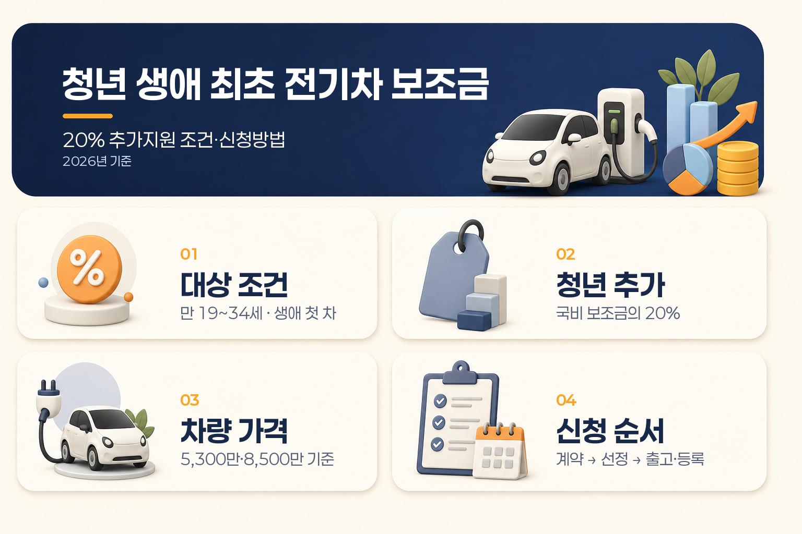

청년 생애 최초 전기차 보조금, 20% 추가지원 조건·신청방법 총정리
전기차를 첫 차로 구매하려는 청년이라면 2026년 보조금에서 국비 지원액의 20%를 추가로 받을 수 있는 조건을 확인할 수 있습니다.
다만 이 20%는 차량 가격의 20%가 아닙니다. 해당 차종에 책정된 국비 보조금의 20%를 더하는 방식이며, 지방비는 거주 지역·차종·예산에 따라 별도로 달라집니다.
이 글은 2026년 7월 18일 기준으로 만 19~34세 청년, 생애 첫 자동차, 차량 가격 기준, 지자체 신청 순서와 생애최초 증빙서류를 한 번에 정리한 안내입니다.
먼저 핵심 조건부터 정리하면
| 확인할 항목 | 2026년 기준 핵심 내용 |
|---|---|
| 청년 연령 | 만 19세 이상 34세 이하 |
| 구매 조건 | 전기차를 생애 첫 자동차로 구매 |
| 청년 추가지원 | 해당 차량 국비 보조금의 20% |
| 국비 상한 | 중·대형 승용 최대 580만 원, 소형 승용 최대 530만 원 범위에서 차등 |
| 차량 가격 | 5,300만 원 미만 전액, 5,300만~8,500만 원 미만 50%, 8,500만 원 이상 미지원 |
| 지방비 | 거주 지역·차종·예산·접수순서에 따라 별도 확인 |
| 신청 방식 | 차량 계약 후 제조사·수입사 또는 판매점이 지자체에 대행 신청 가능 |

핵심은 “청년이면 20%를 받는다”가 아니라 만 19~34세이면서, 전기차가 생애 첫 자동차인 경우 국비에 20%가 붙는다는 구조입니다.
청년 생애 최초 전기차 보조금은 어떤 제도인가요?
별도의 현금성 청년지원금을 따로 신청하는 방식이라기보다, 전기자동차 구매보조금 안에 있는 구매자 특성별 추가지원에 가깝습니다.
청년 기준은 「청년기본법」에 따른 만 19세 이상 34세 이하입니다. 따라서 다른 청년정책에서 만 39세까지를 대상으로 하더라도, 이 중앙정부 전기차 추가지원 기준은 만 34세까지로 보는 것이 기본입니다.
또 하나 중요한 표현은 “첫 전기차”가 아니라 생애 첫 자동차입니다. 과거에 자동차를 구매·등록한 이력이 있는지 확인하는 서류가 필요할 수 있으므로, 단순히 이전에 전기차를 산 적이 없다는 이유만으로 신청 가능하다고 판단하면 안 됩니다.
현재 확인한 중앙정부 기준에는 청년 추가지원에 별도 소득요건이 제시되어 있지 않습니다. 다만 지자체는 거주기간, 접수기간, 우선순위, 제출서류 등 별도 조건을 공고할 수 있습니다.
20% 추가지원금은 어떻게 계산하나요?
계산식은 간단합니다.
청년 추가지원금 = 해당 차종 국비 기본 보조금 × 20%
예를 들어 차종별 국비 기본 보조금이 500만 원으로 책정되어 있다면 다음처럼 계산합니다.
| 구분 | 금액 예시 |
|---|---|
| 국비 기본 보조금 | 500만 원 |
| 청년 생애최초 추가분 | 100만 원 |
| 청년 조건 적용 후 국비 부분 | 600만 원 |
| 지방비 | 거주 지자체와 차종별로 별도 계산 |
이 예시는 계산 구조를 보여주기 위한 것입니다. 실제 국비 기본액은 차종의 연비·주행거리·배터리·가격인하 여부 등에 따라 달라지고, 국비 상한액을 그대로 받는다는 뜻도 아닙니다.
중·대형 승용차의 국비 상한이 580만 원이라고 해도 모든 차종에 580만 원이 적용되는 것은 아닙니다. 해당 차량의 실제 국비 보조금이 580만 원으로 확정된 경우에만 단순 계산상 청년 추가분이 116만 원이 됩니다.
차상위 이하 계층, 다자녀 등 다른 구매자 특성별 추가지원은 중복 가능하다고 안내되어 있습니다. 다만 정액 지원은 비율 추가지원 계산 후 마지막에 더하는 구조이므로, 개인별 조합은 차종과 지자체 공고를 함께 확인해야 합니다.
차량 가격 기준도 함께 봐야 합니다
승용 전기차는 차량 기본가격에 따라 보조금 지원 비율이 달라집니다.
| 차량 기본가격 | 보조금 기준 |
|---|---|
| 5,300만 원 미만 | 보조금 전액 기준 |
| 5,300만 원 이상~8,500만 원 미만 | 보조금의 50% 기준 |
| 8,500만 원 이상 | 보조금 미지원 |
청년 추가지원은 기본 보조금이 산정된 뒤 적용되는 구조이므로, 차량 가격 기준에서 보조금이 줄거나 제외되면 청년 추가분도 함께 달라집니다.
따라서 차량을 고를 때는 광고에 표시된 “청년 추가 20%”만 따로 보기보다 다음 순서로 확인하는 편이 안전합니다.
- 차량 기본가격이 어느 구간인지 확인합니다.
- 무공해차 통합누리집에서 해당 차종의 국비 보조금을 확인합니다.
- 거주 지자체의 차종별 지방비를 확인합니다.
- 국비 기본액에 20%를 적용해 청년 추가분을 계산합니다.
- 지역 예산과 접수 가능 여부를 확인한 뒤 계약 일정을 잡습니다.
국비와 지방비는 어떻게 나뉘나요?
전기차 보조금은 국비와 지방비가 합쳐져 차량 구매 과정에 반영되지만, 두 금액의 기준은 다릅니다.
| 구분 | 확인 기준 |
|---|---|
| 국비 | 차종별 성능·가격·제조사 평가 등을 반영한 전국 기준 |
| 지방비 | 구매자의 거주 지역, 차종별 배분, 지자체 예산과 접수 조건 |
| 청년 추가분 | 해당 차량 국비 보조금의 20% |
| 접수 상태 | 공고 물량, 잔여 예산, 출고·등록 시점, 지자체 선정 방식 |
지자체는 차종별 국비 산정 수준에 비례해 지방비를 차등 산정합니다. 하지만 같은 차량이라도 어느 지역에서 구매하느냐에 따라 전체 보조금이 달라질 수 있습니다.
2026년 지침상 지자체는 보급 물량을 나누어 최소 2회 이상 공고할 수 있고, 개인 구매자에게 일정 기간의 거주요건을 둘 수 있습니다. 거주기간 요건은 지침상 3개월 이내로 설정하도록 안내되어 있지만, 실제 신청 가능 여부는 해당 지역 공고문을 기준으로 봐야 합니다.
신청은 보통 어떤 순서로 진행되나요?
전기차 보조금은 구매자가 정부 사이트에서 모든 절차를 직접 처리하는 방식이라기보다, 차량 계약과 함께 제조사·수입사 또는 판매점이 신청을 대행하는 흐름이 일반적입니다.
기본 신청 흐름
- 무공해차 통합누리집에서 보조금 대상 차종과 거주 지역 금액을 확인합니다.
- 제조사·수입사 또는 판매점에서 차량 구매계약을 체결합니다.
- 구매지원 신청서와 증빙서류를 준비해 판매점에 제출합니다.
- 제조사·수입사 또는 판매점이 관할 지자체에 구매지원 신청을 대행합니다.
- 지자체가 자격과 예산을 검토해 지원 대상자를 선정합니다.
- 대상자 확정 후 차량을 출고·등록합니다.
- 등록 후 정해진 기간 안에 집행 증빙을 제출합니다.
지자체의 대상자 선정 방식은 출고·등록순, 추첨, 구매지원 신청서 접수순 중에서 지역별로 달라질 수 있습니다. 보조금 대상자로 선정되더라도 차량 출고가 늦어지면 선정이 취소되거나 대기자로 바뀔 수 있으므로, 계약 전 출고 예정일도 함께 확인해야 합니다.
2026년 7월 이후에는 전기차 화재안심보험 가입요건이 적용되는 차량만 보조금 대상이 되는 제도 변경도 안내되어 있습니다. 차량별 적용 여부는 제조사 설명과 무공해차 통합누리집의 대상 차종 정보를 함께 확인하는 것이 좋습니다.
생애최초 증빙서류는 무엇을 준비하나요?
공통서류와 추가지원 증빙서류를 나누어 생각하면 편합니다.
| 구분 | 준비 가능성이 높은 서류 | 확인 포인트 |
|---|---|---|
| 공통 | 전기자동차 구매지원신청서, 차량구매계약서 | 판매점이 양식을 안내하는 경우가 많음 |
| 거주 확인 | 주민등록초본 | 이전 주소 변동사항과 지자체 거주기간 확인 |
| 생애최초 | 지방세 세목별 미과세증명서 | 차량 취득세·자동차세·등록세 관련 항목과 발급 범위 확인 |
| 추가 대상 | 차상위·기초생활수급자 증명서, 가족관계증명서 등 | 해당되는 경우에만 지자체 공고에 따라 제출 |
서울시 FAQ는 생애 최초 차량 구매자 추가보조금 신청에 출생연도부터 현재까지의 지방세 세목별 미과세증명서와 주민등록초본을 안내하고 있습니다. 다만 이 서류 구성이 전국 모든 지자체에서 동일하다고 단정하면 안 됩니다.
특히 지방세 미과세증명서는 발급 지역과 기간을 잘못 선택하면 자동차 보유 이력 확인이 충분하지 않을 수 있습니다. 발급 전 해당 지자체 공고 또는 판매점이 안내하는 세목·기간·전국 단위 발급 여부를 확인하세요.
보조금 신청 타이밍에서 놓치기 쉬운 부분
보조금은 계약했다고 바로 확정되는 금액이 아닙니다. 다음 세 가지 시점을 구분해야 합니다.
| 시점 | 의미 |
|---|---|
| 계약일 | 차량 구매계약을 체결한 날 |
| 지원 대상자 선정일 | 지자체가 보조금 대상자로 확정한 날 |
| 출고·등록일 | 실제 차량을 출고하고 등록한 날 |
지자체별로 접수순이나 출고·등록순을 적용할 수 있고, 예산이 소진되면 접수가 마감될 수 있습니다. 또 보조금 대상자 선정 후에도 일정 기간 안에 차량이 출고되지 않으면 대상자 선정이 취소될 수 있습니다.
그러므로 “차량을 먼저 계약하면 보조금을 확보할 수 있다”거나 “20% 추가분은 누구나 나중에 신청하면 된다”고 단정하기 어렵습니다. 계약 전에는 반드시 대상 차종, 지역 예산, 접수 상태, 선정 방식, 출고 예정일을 함께 확인해야 합니다.
의무운행기간과 보조금 환수도 확인하세요
전기차 보조금을 받은 뒤 짧은 기간 안에 매도하거나 등록을 말소하면 보조금 일부가 회수될 수 있습니다.
찾기쉬운 생활법령정보는 최초 등록일부터 법정 의무운행기간이 지나지 않은 상태에서 등록말소를 신청하면 사용기간별 회수기준에 따라 보조금을 회수한다고 안내합니다. 승용차를 2년 이내 판매하는 경우 별도 승인 절차를 두는 지자체도 있습니다.
사고나 천재지변처럼 불가피한 말소는 예외 기준이 적용될 수 있지만, 일반적인 조기 매도·폐차와는 구분해야 합니다. 차량을 오래 보유할 계획인지, 중고 판매나 이전 가능성이 있는지에 따라 확인해야 할 조건이 달라질 수 있습니다.
자주 묻는 질문
만 35세부터 39세인 청년도 청년 추가지원 대상인가요?
2026년 중앙정부 전기차 구매보조금의 청년 추가지원 기준은 만 19세 이상 34세 이하입니다. 다른 청년정책의 연령 기준과 혼동하지 않는 것이 좋습니다.
차량 가격의 20%를 지원하나요?
아닙니다. 차량 가격이 아니라 해당 차종에 책정된 국비 보조금의 20%입니다.
국비 20%에 지방비도 같이 20% 붙나요?
청년 추가분은 국비 지원액을 기준으로 계산됩니다. 지방비는 거주 지역과 차종별 공고에 따라 별도로 산정되므로, 전체 보조금에 단순히 20%를 곱하면 안 됩니다.
이전에 오토바이나 가족 차량을 보유한 경우는 어떻게 되나요?
생애최초 인정 범위와 확인 방식은 자동차 종류·등록 이력·지자체 공고에 따라 확인해야 합니다. “내 명의의 승용차가 없었다”는 사실만으로 모든 경우를 동일하게 판단하지 말고, 과거 등록 이력을 확인할 서류와 지역 기준을 판매점·지자체에 확인하는 것이 안전합니다.
보조금 신청은 구매자가 직접 하나요?
구매자가 계약서와 증빙서류를 준비하고, 제조사·수입사 또는 판매점이 지자체 신청을 대행할 수 있습니다. 다만 제출서류와 최종 책임 기준은 지자체 공고에 따라 달라질 수 있습니다.
전기차를 산 뒤 바로 팔아도 되나요?
의무운행기간 안에 판매·폐차·등록말소를 하면 보조금 환수나 승인 절차가 발생할 수 있습니다. 최초 등록일과 사용기간별 회수기준을 확인해야 합니다.
신청 전 체크리스트
- 만 19세 이상 34세 이하인지 확인했습니다.
- 구매하려는 전기차가 생애 첫 자동차에 해당하는지 확인했습니다.
- 차량 기본가격이 보조금 가격 구간에 들어오는지 확인했습니다.
- 무공해차 통합누리집에서 차종별 국비 보조금을 확인했습니다.
- 거주 지자체의 지방비와 잔여 예산을 확인했습니다.
- 지자체의 거주기간과 접수·선정 방식을 확인했습니다.
- 지방세 세목별 미과세증명서와 주민등록초본 등 생애최초 증빙을 확인했습니다.
- 차량 출고 예정일이 대상자 선정 후 기한 안에 들어오는지 확인했습니다.
- 2026년 7월 이후 화재안심보험 요건에 해당하는 차량인지 확인했습니다.
- 조기 매도·폐차 시 보조금 환수 기준을 확인했습니다.
마무리 정리
청년 생애 최초 전기차 보조금의 핵심은 만 19~34세 청년이 생애 첫 자동차로 전기차를 구매하면 해당 차종 국비 보조금의 20%를 추가로 받을 수 있다는 점입니다.
하지만 실제 구매 금액은 청년 추가분 하나만으로 결정되지 않습니다. 차량 가격 구간, 차종별 국비, 거주 지역의 지방비, 잔여 예산, 생애최초 증빙, 출고일과 의무운행기간을 함께 확인해야 합니다.
따라서 계약 전에는 무공해차 통합누리집에서 차종·지역별 금액을 조회하고, 판매점에는 청년 생애최초 추가지원과 지방세 증빙서류를 별도로 확인하는 순서가 적절합니다.
자료 기준일: 2026년 7월 18일 주요 출처: 기후에너지환경부 2026년 보조금 지침·카드뉴스, 찾기쉬운 생활법령정보, 무공해차 통합누리집, 서울특별시 전기차 보조금 FAQ 안내: 이 글은 2026년 7월 18일 기준 공개된 정부·지자체 안내를 바탕으로 정리한 일반 정보입니다. 차량별 보조금, 지자체 예산, 거주기간, 제출서류와 접수 방식은 신청 시점의 공고에 따라 달라질 수 있으므로 계약 전 무공해차 통합누리집과 관할 지자체 공고를 다시 확인하세요.